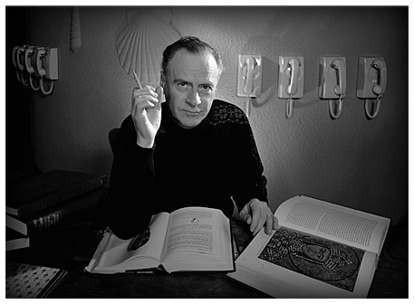

Herbert Marshall McLuhan, (July 21, 1911 – December 31, 1980) was a Canadian professor, philosopher, and public intellectual. He was the first major communications theorist of how the new media have the power to transform human nature. No matter how powerful or persuasive the message, he said, it’s the media that have changed our patterns of thought and behaviour. All of this was done in the early 1960s at a time when television was still in its infancy, and the personal computer was almost twenty years into the future. Now, in a world dominated by the Internet and social media, McLuhan’s revolutionary ideas are as hotly debated as they were in the 1960s.
In a series of books written while he was at Toronto, McLuhan set forth his "probes" and "explorations" about the way communication influences society. He frankly declined to follow the rules of systematic social scientific empiricism or the rigorous logic of theory building, preferring instead to draw upon his wide erudition and his flair for popularizing his ideas. His books became influential and were highly controversial.
McLuhan is announcing what Lewis H. Lapham says is a world of people who worship the objects of their own invention in the form of fax machines and high speed computers, and accept the blessings of Coca-Cola and dresses by Donna Karan as the mark of divinity.{3} The fact that more people watch television than go to church is nothing new to us, but it was one of the tell-tale signs of a cultural shift in history for McLuhan; a shift which has been imperceptible to most, and devastating to all.
In the book, The Mechanical Bride, he outlined the influence of print media on the male and female psyche. The advertising companies were doing the controlling, and the desired effect was nothing loftier than selling products to unsuspecting customers. Making women into objects of desire by men, and then in turn selling the women the products to help them achieve the effect of desirability, accomplished the entire enterprise.
(Sources: http://www.marshallmcluhanspeaks.com/ http://www.leaderu.com/orgs/probe/docs/mcluhan.html)